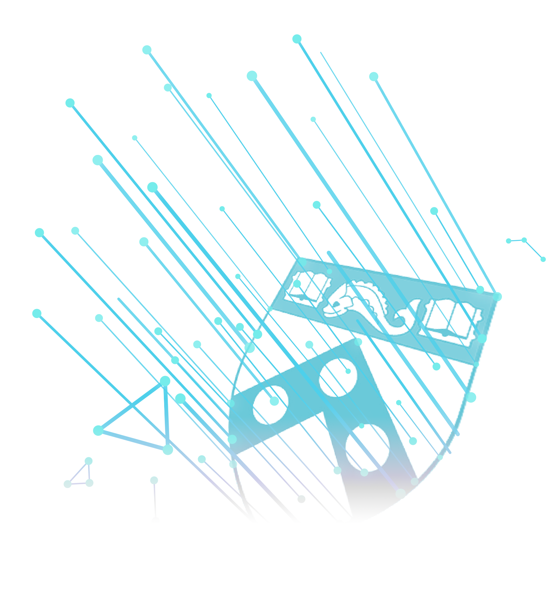
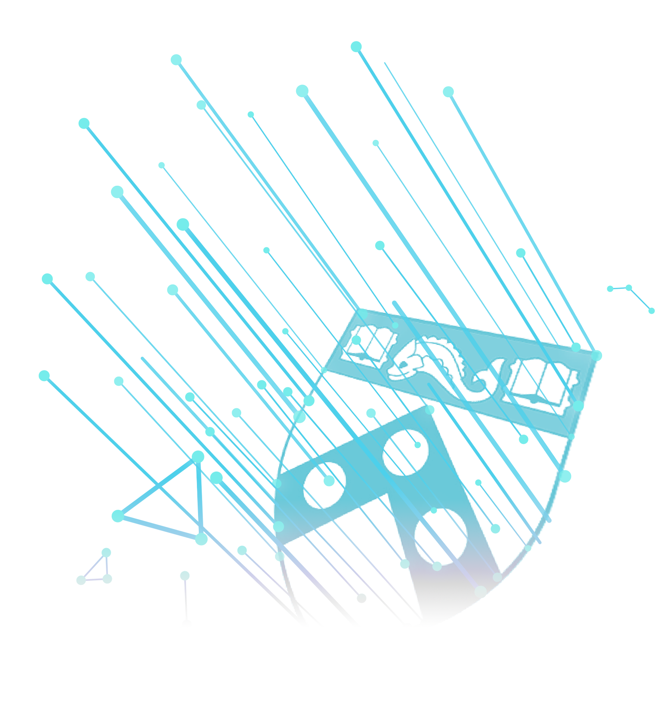

Open Positions
Postdoctoral Research Positions
in Adaptive and Adversarial Machine Learning
PRECISE Center & GRASP Lab
Department of Computer and Information Science
University of Pennsylvania
We are seeking applications for postdoctoral fellows to join a new interdisciplinary project titled “Robust Concept Learning and Lifelong Adaptation Against Adversarial Attacks” at the University of Pennsylvania. This project is to develop the foundations for robust and adaptive learning based on childhood development consisting of three research thrusts: (I) Concept-based Learning Robust to Adversarial Examples; (II) Adaptive Learning in Dynamic Environments; and (III) Verification and Monitoring of Learning. Our approach will enable adaptive child-like learning that is robust to adversarial examples by utilizing concepts (e.g., prior models and shapes) inherent in the physical world, while simultaneously detecting and adapting to changes in the environment and concepts, such that robustness claims can be validated through a combination of offline verification and runtime monitoring.
Researchers with an interest and experience in any related areas are welcome to apply. Particular areas of interest include one or more of the following: machine learning, formal methods for machine learning, adversarial learning, computer vision, child development psychology, and tool development. Candidates are expected to have strong background in one or more of the above areas.
Positions are offered for one year and can be extended based on mutual agreement (up to 3 years). Positions can start as soon as possible. A competitive salary will be offered.
Please email a complete CV including a research statement to any of the following team members:
Insup Lee (PI)
Osbert Bastani
Kostas Daniilidis
Eric Eaton
Dan Roth
James Weimer
Julia Parish-Morris (Children’s Hospital of Philadelphia)